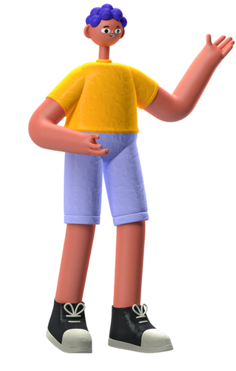
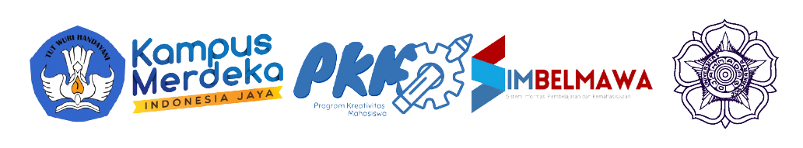

Our Product Is
Home Page
About Product
Superiority
Results
 
Cat lukis pereda stres dan media pengenalan hutan
Mendukung kesahjahteraan UMKM
Mengurangi pencemaran lingkungan akibat pewarna sintetis